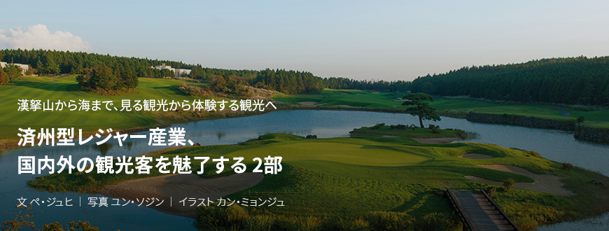
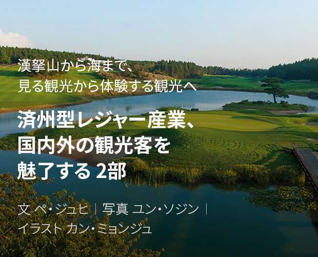
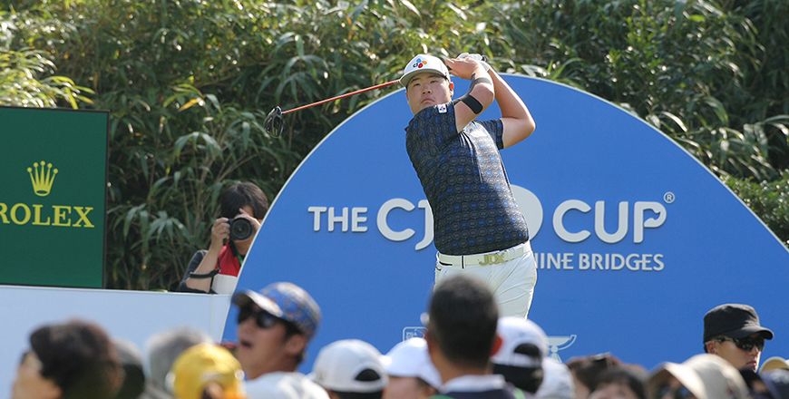
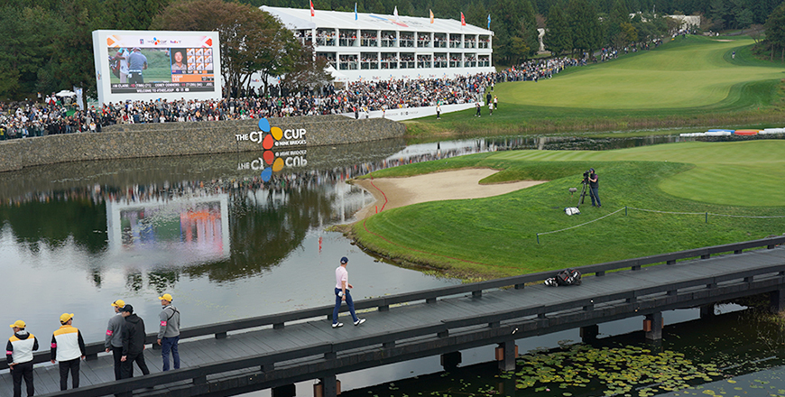
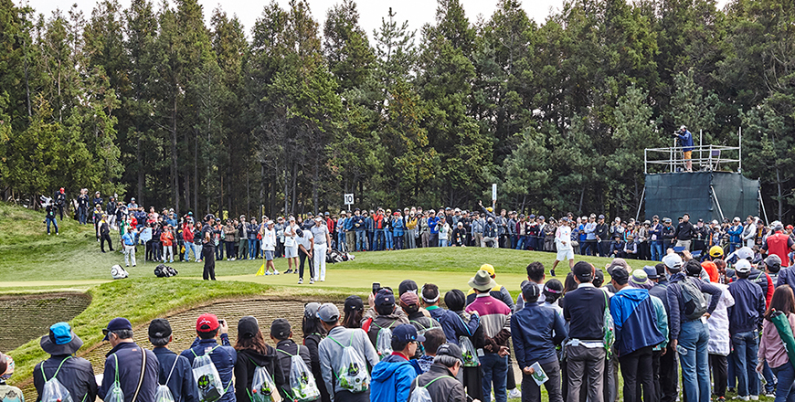

기획취재콘텐츠
- Home
- 제주라이프
- 기획취재콘텐츠
済州型レジャー産業、国内外の観光客を魅了する 2部새로운 글




ゴルフの未来を担うルーキーにとっては夢の舞台で、地域経済活性化の機会、ザ・CJカップ
CJグループが主宰するザ・CJカップは、大韓民国で開催される最初で唯一のPGAツアーのレギュラー戦。「Bridge to Realization」というコンセプトの下で韓国男子ゴルフのルーキーたちが世界舞台チャレンジという夢が実現できるようにチャンスを与える場で、地域経済の活性化に貢献する国際イベントとしてその役割を果たしている。

- アジア選手としては初めてPGAツアー新人賞を受賞したイム・ソンジェ選手が ザ・CJカップ2019でティーショットを打っている ⓒCJグル -
2017年から10年間開催する予定のザ・CJカップは、昨年まで済州道で計3回の大会を開いた。開催の成果は眼に見えるほど大きい。この3年間でそれぞれ3万5千、4万1千、4万6千人以上のギャラリーが会場を訪ねて済州道は直接・間接の膨大な経済効果を得た。CJグループが提供したリサーチ会社の調査結果によると、2018年度基準で会場を訪問したギャラリーは1人当たり1日約17万ウォンを消費し、2018年のザ・CJカップの直接経済効果は約249億ウォンだと推計される。また世界226か国10億世帯に23言語で中継され、約1,840億ウォンに近いメディア露出成果を収め、膨大な経済効果を生み出した。
また、CJグループは済州道観光公社と協力し、PGAツアーの主要選手たちと共に済州特産物と独特な自然環境を背景に広報動画を制作、済州を世界に発信することに貢献した。初大会の2017年にはアダム・スコット選手がサーフィンを楽しみ、ジェイソン・デイ選手は海女が採ったばかりの海産物と済州特産の黒豚焼きを食べた。また、2018年にはダニー・ウィレット選手がオルムに登り済州でしか見られない美しい景色を満喫し、ブルックス・ケプカ選手が済州の沖合で長さ51cmのキダイを釣って世界のメディアとSNSから多くのゴルフファンの注目を集めた。
昨年はアメリカと韓国を代表する選手のフィル・ミケルソンさんとチェ・ギョンジュさんが済州道の緑茶畑と緑茶、乗馬を体験する様子を世界に発信した。ザ・CJカップを訪問した有名ゴルフ選手たちが済州を満喫して楽しんでいる様子をそのまま発信することにより、済州の魅力を世界に知らせる役割を果たしたのである。
- (左)2019年、済州で茶道体験をしながら韓国文化を経験したフィル・ミケルソン選手と ⓒCJグル,
(右)乗馬体験をしたチェ・ギョンジュ選手 ⓒCJグル -
(右)乗馬体験をしたチェ・ギョンジュ選手 ⓒCJグル -
済州の環境と完璧に融合するゴルフ場、クラブナインブリッジ
大会が開かれるクラブナインブリッジは、「自然とゴルフが完璧に融合している」と評価される。済州道の自然特徴を活かしながらもゴルファーのレベルに合わせてそれぞれ違うアプローチができるように整備したコースとして有名。また、PGAツアーの選手たちも舌を巻く済州ならではの渦巻きの風と錯視を起こす「漢拏山ブレーキ(break) 」、そして素晴らしい景色は世界に済州を発信する中核的な魅力ポイントだといえる。
クラブナインブリッジは、世界的なゴルフ専門マガジンのゴルフダイジェストで２年毎にまとめる「世界のゴルフコース」順位に2018年度は23位、2020年度には18位を占めてほかの世界的なゴルフ場と肩を並べられるレベルの高いゴルフ場である。それだけでなく、韓国のベストコースとして6回連続1位(2019年基準)を占め、2017年には韓国ゴルフコース名誉の殿堂に入るなど、韓国はもちろん世界的にも認められている。18年前には韓国初のLPGA大会を開催し、世界有数のゴルフクラブ同士の対抗戦であるワールドクラブチャンピオンシップなど、世界有数の大会を開催するなどその歴史が長い。
※ 2) : 漢拏山の影響でグリーンの傾斜が見えるのと異なる現象を指す
- 自然と融合する素晴らしい景色を誇るクラブナインブリッジの18番ホールの全景 ⓒCJグル -

- 授賞式のため18番ホールのグリーンを歩いていくジャスティン・トーマス選手(2019) ⓒCJグル -
CJグループがクラブナインブリッジの敷地として済州道を選んだ理由があった。韓国のほとんどのゴルフ場は産学地形に整備され、山を削る過程でかなりの自然の破壊を余儀なくされるのだが、CJグループは自然の破壊を最低化して自然を最大限に生かした世界レベルのゴルフ場を建設するために、平坦な丘陵でありながらも恵まれた地形条件をもつ済州道を選ぶことになったという。
済州道は1年中ゴルフが楽しめる恵まれた自然条件をもち、島の中で多様な自然環境の変化が感じられる好条件を備えているので、ゴルフ観光には最適の地域だと考えられます。ゴルフだけでなく多様な見せどころ、エンターテインメント、グルメがあり、現在は済州道が推進しているエコ政策によるクリーン済州のイメージもゴルフと観光産業の発展可能性を高めてくれると考えています
- キム・ユサンCJグループスポーツマーケティング部長
済州のゴルフ産業と選手、地域成長のために持続的に努めていく
CJグループは、PGAツアーの開催を推進しながら大会の会場として済州道のクラブナインブリッジを優先に念頭に入れていた。ナインブリッジは、多くの国際イベントの実績から世界のゴルフ関係者から認められたコースで、済州道の美しい自然環境が世界に発生発信できる最適のコースだと考えたのがその理由。また、済州道がもつ見せ物、グルメ、エンターテインメントを、大会を通じて世界に広く知らせることができたらいいと考えて、まず済州道で開催することを決定したという。
ザ・CJカップは開会して3年しか経っていない歴史の浅い大会だが、CJグループならではの差別化戦略によりさらにレベルの高い大会になれるよう、徹底的に準備するのはもちろん、PGAツアーの選手やギャラリーたちの心を魅了するために引き続き取り組みを図っている。
残念ながら今年は新型コロナウイルスのため済州ではなくアメリカで大会を開催する予定だが、今後もザ・CJカップはザ・CJカップならではの特長を活かして選手とファンに最も愛される大会へと発展するはずだ。また、ザ・CJカップが目指しているゴルフ大会による韓国男子ゴルフ、ゴルフ産業、地域経済、韓国文化のグローバル化などのビジョンが大会の成長と共に実現するよう努めていくという抱負を明かした。

- THE CJ CUPに集まった大勢の観衆 (2018年) ⓒCJグル -
이전글
다음글